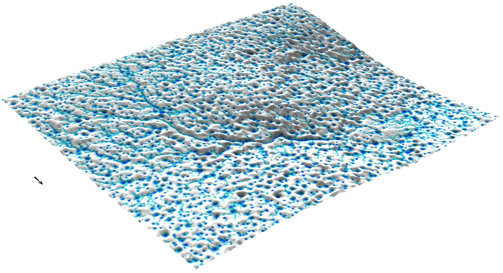

Shallow water flow equation
- processes modeled by SWF equation:
- overland flow
- dam breach flooding
- storm surge


Helena Mitasova, Anna Petrasova, Vaclav Petras
GIS714 Geosimulations NCSU
bivariate form of the St Venant equation
$$ {\partial h({\bf r},t) \over \partial t} + \nabla \cdot {\bf v}({\bf r},t) h({\bf r},t) = i_e({\bf r},t)$$
hydraulic radius is approximated by flow depth $h({\bf r},t)$ and the unit discharge is given by:
where the flow velocity is given by the Manning's relation
$${\bf v}({\bf r},t)= {C\over n({\bf r})} h({\bf r},t)^{2/3} |{\bf s_f}({\bf r},t)|^{1/2} {\bf s_{f0}({\bf r},t)}$$
momentum conservation in the diffusion wave approximation: $$ {\bf s_f}({\bf r},t)={\bf s}({\bf r})-\nabla h({\bf r},t)$$
images illustrating approaches
$$ \partial h({\bf r},t)/\partial t =0 \quad \longrightarrow \quad \nabla \cdot [ h({\bf r}){\bf v}({\bf r})] = i_e({\bf r})$$
approximate diffusive wave effects $ \propto \nabla^2 [h^{5/3}({\bf r})]$ : $$-{\varepsilon({\bf r})\over 2 }\nabla^2 [h^{5/3}({\bf r})] +\nabla \cdot [ h({\bf r}){\bf v}({\bf r})] = i_e({\bf r})$$
Method for solving linear partial differential equations developed in physics, used also in chemistry, finance
Governing equation: $L(c) = S$
S is sources-sinks, c is the modeled quantity, L is the operator e.g.,diffusion+ flow/drift + proliferation/decay
Solution: $c = L^{-1} (S)$, $L^{-1}$ is the inverse operator
sample the source term field simulate action of L-1 on S estimate c from the density
Evolution of the water depth solution


geometry based methods, kinematic wave, approx. diffusion wave

Error is proportional to the $1/\sqrt N$, where N is the number of particles


Error is proportional to $1/\sqrt N$, $N$ is number of particles

Path sampling enables implementation with multiple resolutions by adjusting the weight of the particles


Overland flow with spatialy variable source areas

Scenarios with spatialy variable source areas


Path sampling solution for overland flow with uniform rainfall


example from the assigment
see supplemental material for equations and itzi web page for references
Dam breach model - full diffusive wave solution with backwater effect

see supplemental material for equations and r.damflood manual page for references


Flow depth during and after rainfall

Surface water

Surface water